Solar Flare Prediction Experiments
1) How to Train Your Flare Prediction Model
This experiment summarizes the changes made to the training pipeline in order to better align the implementation with the referenced paper. The main modifications were related to the train-test split, normalization strategy, and class balancing.
Changes Implemented Based on the Paper
- Temporal partitioning for train and test: To address the issue of temporal coherence, different partitions were used for training and testing. Partition 1 was used for training, and Partition 2 was used for testing.
- Global normalization: Instead of normalizing each window independently, dataset-level normalization was applied. The mean and standard deviation were computed across the full training set and then used to normalize the data.
- Improved undersampling strategy: The dataset was balanced by reducing the number of samples in each class so that all classes had the same count as class X.
-
Alternative class-weighting approach mentioned in the paper:
The paper states that misclassification weighting may be a better alternative than undersampling.
The class weight is given by:
wj = n / (k · nj)where minority classes receive a larger penalty during training than majority classes.
Results
After applying the changes described above, the following results were obtained.
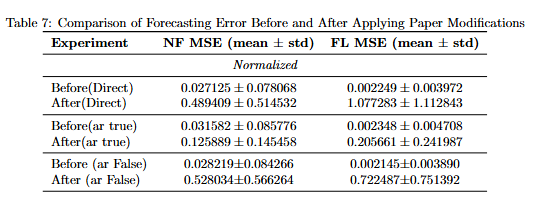
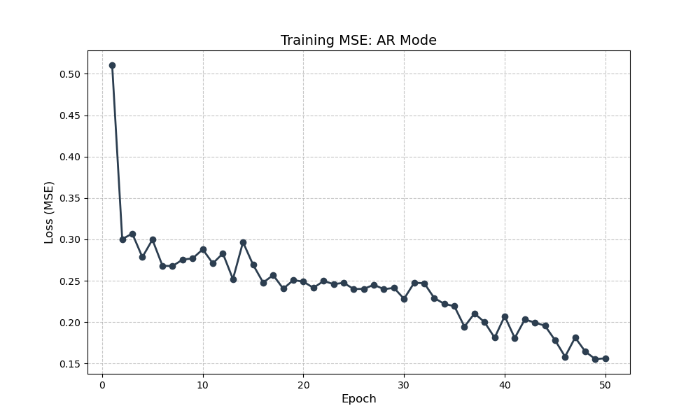
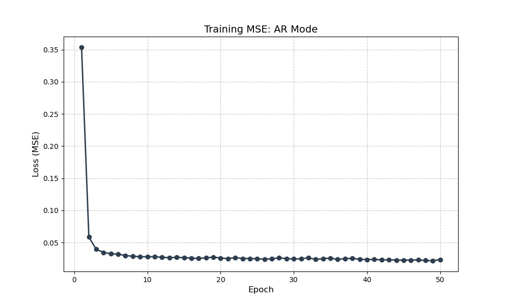
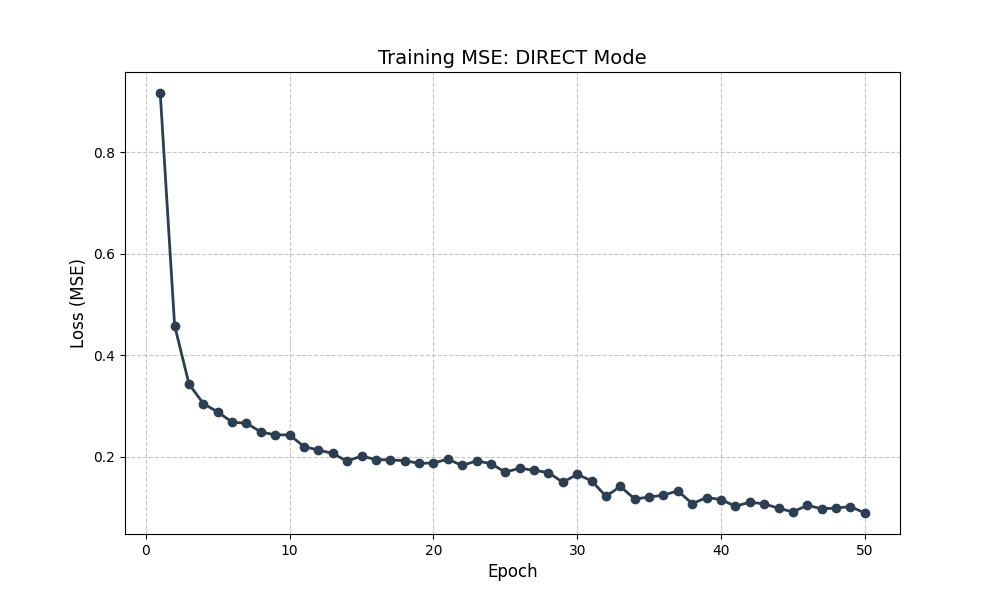
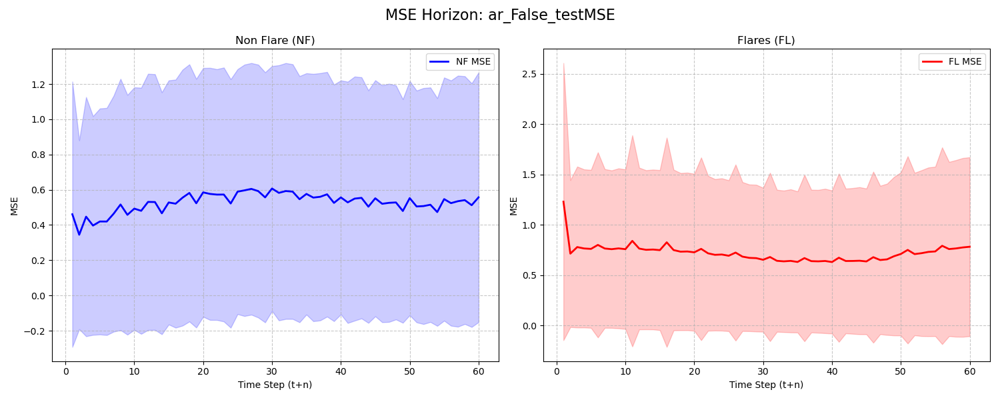
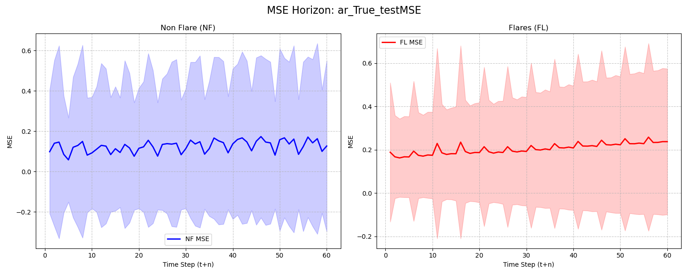
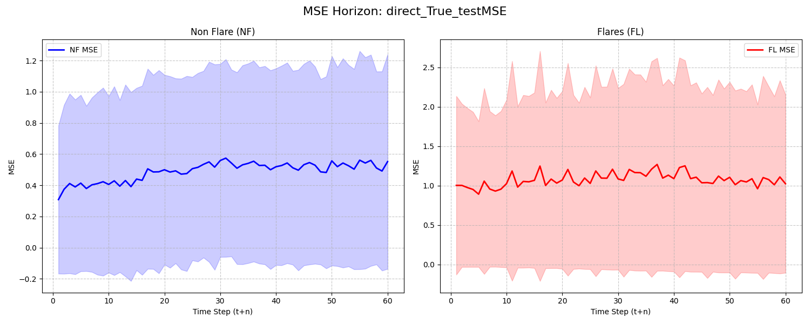
Observation
From the comparison, the best overall results were obtained when AR = True. Therefore, a closer inspection of one individual sample was performed.
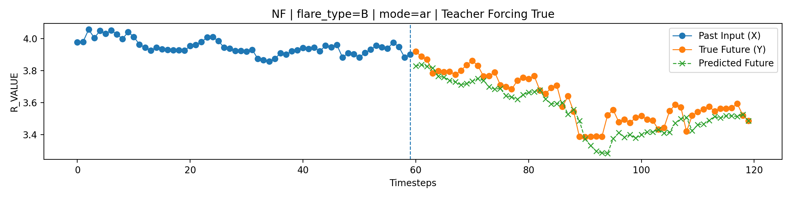
3) Frequency-Domain and Wavelet-Based Representation
Discrete Fourier Transform (DFT)
The Discrete Fourier Transform (DFT) converts a time-series signal from the time domain into the frequency domain. An example of this transformation is shown in the figure below.
In the lossless case, all frequency coefficients are retained. As a result, the original signal can be reconstructed almost exactly from the transformed representation.
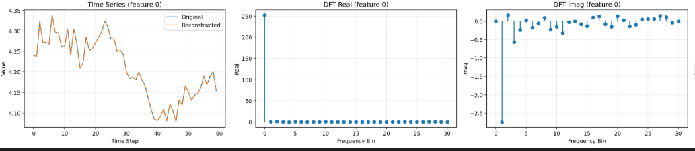
For each frequency bin, the DFT produces a real part and an imaginary part. From these two components, the magnitude and phase can be computed.
- Magnitude: indicates how strongly a particular frequency contributes to the final waveform.
- Large magnitude at lower frequencies: usually corresponds to slow trends and smooth variations in the signal.
- Large magnitude at higher frequencies: usually corresponds to rapid fluctuations, sharp changes, or fine details.
- Phase: indicates the relative shift or starting position of a sinusoidal component.
Although the DFT is effective for identifying which frequencies are present in a signal, it does not directly indicate where those frequencies occur in time. In other words, the DFT provides strong frequency information, but limited temporal localization.
Wavelet Transform
The wavelet transform addresses this limitation by providing both time localization and scale-based frequency information. Unlike the DFT, which represents the entire signal using global sinusoidal components, wavelets analyze the signal using localized basis functions.
The continuous wavelet transform can be written as:
where a is the scale parameter, b is the translation parameter, and ψ is the mother wavelet.
For a function to qualify as a wavelet, it must satisfy the admissibility condition, which ensures that the original signal can be reconstructed from its wavelet coefficients.
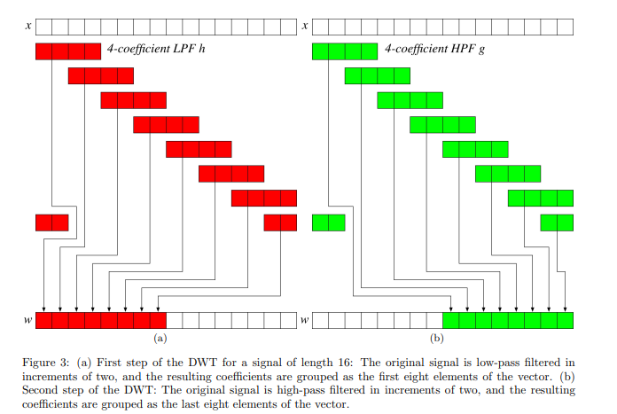
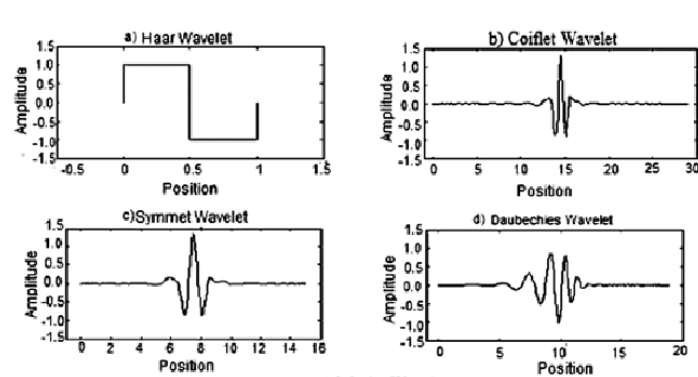
In the discrete wavelet transform, the signal is passed through a low-pass filter and a high-pass filter.
- Low-pass filter: produces the approximation coefficients, which represent a localized and downsampled coarse version of the original signal.
- High-pass filter: produces the detail coefficients, which capture and localize the higher-frequency variations in the signal.
2) Time Series Decomposition Using Wavelet and Fourier Transforms for Enhanced Solar Flare Forecasting
What is this experiment about?
This study compares whether raw time-series input or decomposed input performs better for solar flare classification. The decomposed representations include both wavelet-based methods and the Fourier transform.
The wavelet-based methods considered are Haar, Symlets, and Daubechies. In addition, the Discrete Fourier Transform (DFT) is also applied.
-
Wavelet Transform
-
Haar
- Lossless
- Lossy
-
Symlets
- Lossless
- Lossy
-
Daubechies
- Lossless
- Lossy
-
Haar
- Discrete Fourier Transform
- Lossless
- Lossy
The study also compares lossless and lossy reconstruction, and shows that after applying a low-pass filter, the lossy reconstruction can outperform the lossless version incase of the DFT. However, the final results show that the original time-series data still performs better than the decomposed representation overall.
Features Used
The following five features are used: TOTUSJH, TOTBSQ, TOTPOT, TOTUSJZ, and ABSNJZH.
Train-Test Setup
Partition 1 is used for training, while all remaining partitions are used for testing.
Methodology
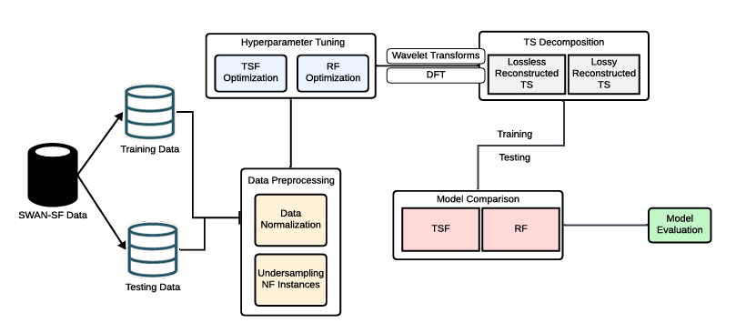
- The SWAN-SF dataset is used for the experiment.
- Partition 1 is treated as the training set, and all remaining partitions are treated as the test set.
- The data is normalized before training.
- Non-flare (NF) instances are undersampled to better balance the dataset with flare samples.
- It is not clearly specified whether this undersampling exactly follows the strategy used in the reference classifier paper, especially with respect to balancing based on class K.
Normalization
Robust scaling is used instead of standard normalization. This means that the data is normalized using the median and the interquartile range (IQR), which makes the method more resistant to outliers.
Decomposition and Reconstruction
After hyperparameter tuning, wavelet transforms and the DFT are applied. The TSF model is trained on both lossless and lossy reconstructed data.
For the lossy case, a low-pass filter is used so that dominant frequency components are preserved. The reconstructed data is then compared with the original time series.
In parallel, the RF model uses NTS data derived from the decomposed components. This produces both lossless and lossy reconstructions, depending on whether filtering is applied.
Results: Key Points
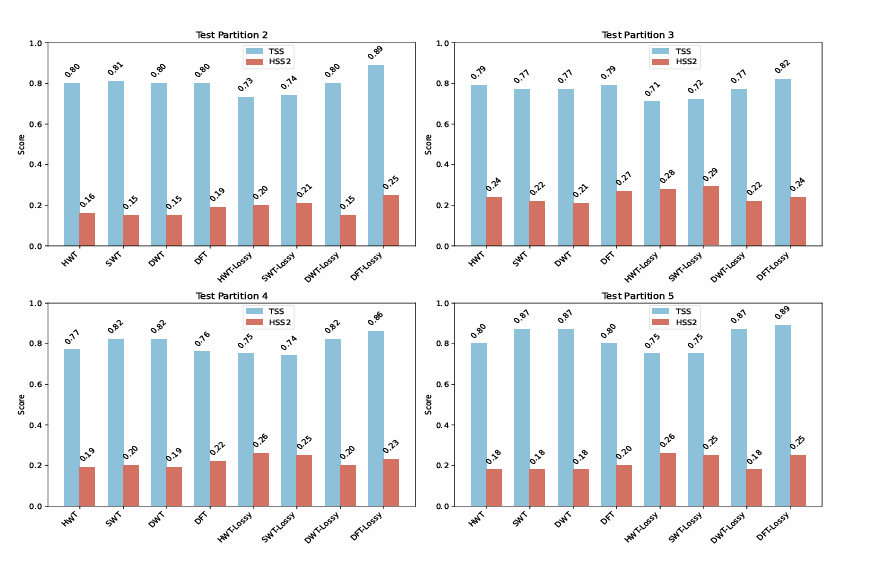
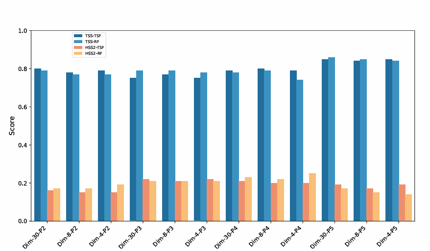
- Lossless reconstruction: The lossless reconstructed signals produce TSS and HSS values similar to those obtained from the original time series. This is expected because the reconstruction is effectively an exact replica of the original signal.
- Lossy reconstruction with low-pass filtering: A low-pass filter is used to determine which components should be retained and which should be removed.
- For flaring data, an SNR of 20 dB is considered when selecting the retain ratio for the low-pass filter.
- The retain ratio corresponding to the selected SNR is then used to reconstruct the original time series.
- The lossy version produces better TSS and HSS values than the lossless version for the TSF model.
- When comparing the original time-series data (TS) with the non-time-series representation (NTS), the original TS performs better in both TSS and HSS.
Interpretation
The original time-series data performs better because it preserves the temporal structure of solar activity, which is important for modeling flare evolution.